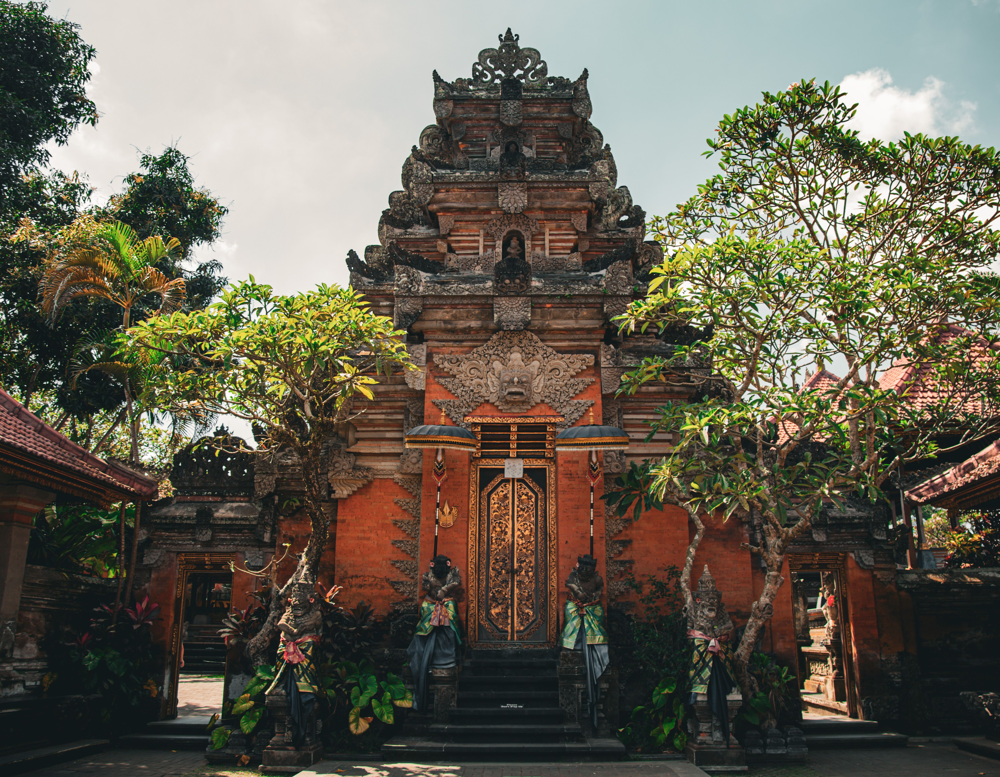
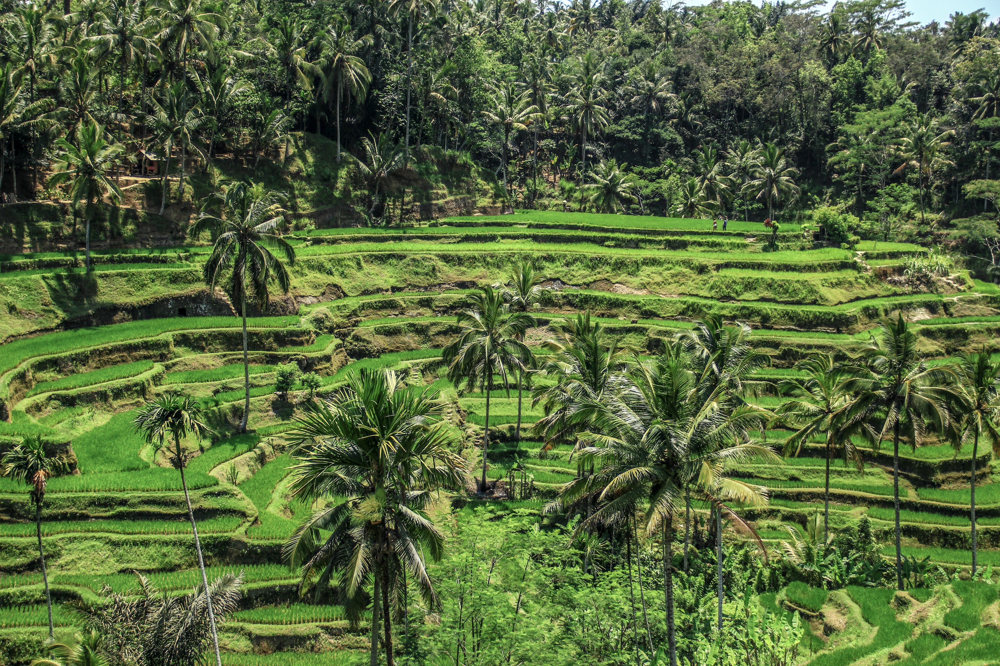
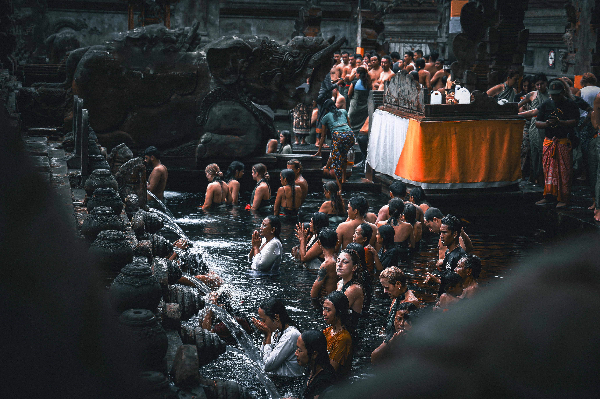
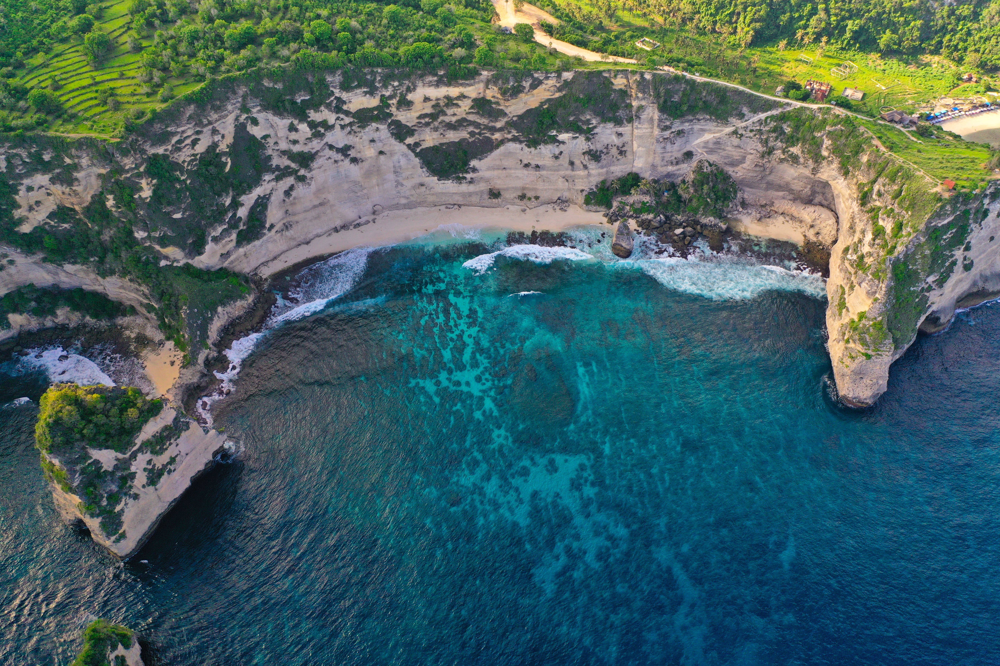

Commencez votre séjour à Ubud, une ville réputée pour son artisanat, ses galeries d'art et son atmosphère paisible. Promenez-vous dans ses rues animées, découvrez les boutiques locales et explorez les environs luxuriants. Profitez de cette première journée pour vous imprégner de la culture balinaise et découvrir les traditions de l'île.

Partez à la découverte des magnifiques rizières en terrasses de Tegallalang, l'un des paysages les plus emblématiques de Bali. Parcourez les sentiers qui traversent les plantations et admirez les nuances de vert qui recouvrent les collines. Poursuivez votre journée par une visite d'un village traditionnel pour découvrir les savoir-faire et le mode de vie local.

Découvrez Tirta Empul, un temple hindou célèbre pour ses sources d'eau sacrée et son architecture traditionnelle. Explorez les cours du sanctuaire dans le respect des coutumes locales, puis poursuivez votre excursion à travers les paysages verdoyants de l'île. Cette journée vous invite à mieux comprendre la spiritualité et le patrimoine culturel de Bali.

Terminez votre séjour dans le sud de Bali, où les falaises spectaculaires dominent l'océan Indien. Découvrez le temple d'Uluwatu, perché au-dessus de la mer, puis profitez d'un moment de détente sur les plages de la région. Admirez les couleurs du coucher de soleil et savourez une dernière journée entre paysages côtiers et douceur de vivre tropicale.
| Option de Séjour | Hébergement (Hôtels 4★) | Inclus | Prix / Pers. |
|---|---|---|---|
| Pack Évasion | Hôtels 4★ (Charme & Confort) | Vols + Transferts + Petit-déjeuner | 11 900 MAD |
| Pack Signature | Hôtels 4★ Sup (Piscine & Jardin Tropical) | Demi-pension + Guide + Excursions | 16 900 MAD |
| Pack Excellence | Villas de luxe & Hôtels 5★ | Pension Complète + Chauffeur Privé + Conciergerie VIP 24/7 | 24 900 MAD |